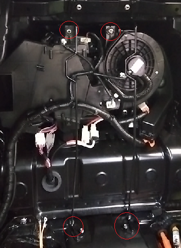
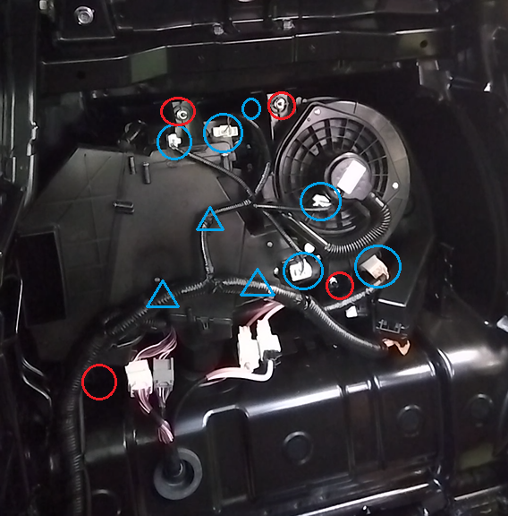
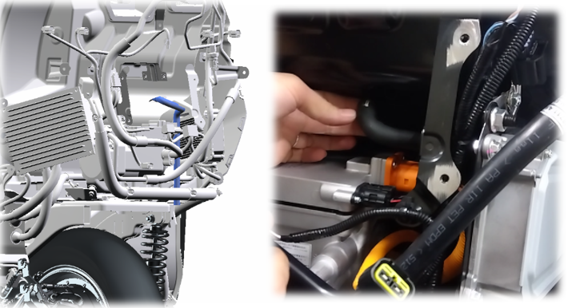
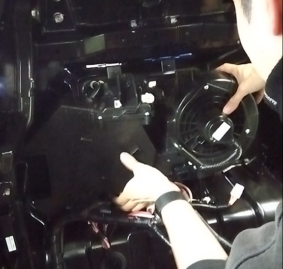

11-1 HVAC
構成図
|
1 |
WIRE ASSY, RR SEAT BACK, RH (G2330-A1000) |
2 |
WIRE ASSY, RR SEAT BACK, LH (G2340-A1000) |
|
3 |
UNIT ASSY, AIR CONDITIONER (H8300-A1000) (TWN W/O PTC) |
4 |
ドレンホース |
|
5 |
NUT, FLANGE (Z5126-00000) |
6 |
NUT, FLANGE (Z5126-80000) |
取り外し前作業
-
タイヤカバーを取り外し4-1-2外装(リヤ)
-
エアコンガス抜き取り12-6 A/Cガス回収・充填
-
クーラーパイプ取り外し12-3 A/Cパイプ（高圧、低圧）
-
DCDCコンバーター_NO. 1取り外し11-1 DCDCコンバーター
-
A/Cダクト取り外し12-4 A/Cダクト・切り替えバルブ
取り外し手順

1.WIRE ASSY, RR SEAT BACK取り外し
-
ナット４個を取り外し、WIRE ASSY, RR SEAT BACK, RH、およびWIRE ASSY, RR SEAT BACK, LHを取り外す。

2.UNIT ASSY, AIR CONDITIONER取り外し
-
コネクター、WHを切り離す。
-
ナット４個を取り外す。

-
車両外側からドレーンホースを取り外す。

-
UNIT ASSY, AIR CONDITIONERを取り外す。
取り付け手順
1.UNIT ASSY, AIR CONDITIONER取り付け
-
UNIT ASSY, AIR CONDITIONERを取り付ける。
-
ナット４個を取り付ける。
-
コネクター、WHを接続する。
-
車両外側からドレーンホースを取りつける。
2.WIRE ASSY, RR SEAT BACK取り付け
-
WIRE ASSY, RR SEAT BACK, RH、およびWIRE ASSY, RR SEAT BACK, LHを取り付ける。
3.A/Cダクト取り付け12-4 ACダクト・切り替えバルブ
4.DCDCコンバーター_NO. 1取り付け11-1 DCDCコンバーター
5.クーラーパイプ取り付け12-3 ACパイプ（高圧、低圧）
6.エアコンガス充填12-6 A/Cガス回収・充填
7.タイヤカバー取り付け4-1-2 外装(リヤ)